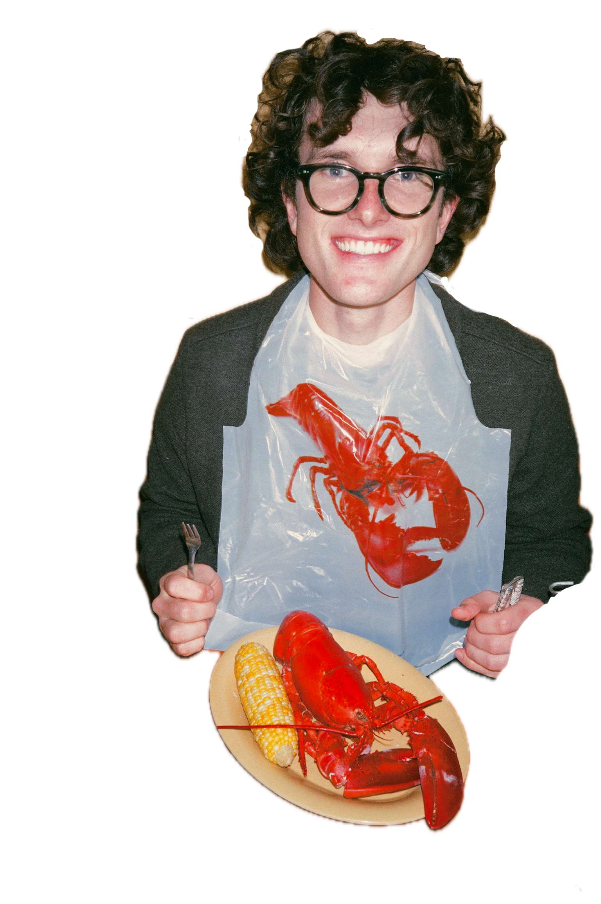
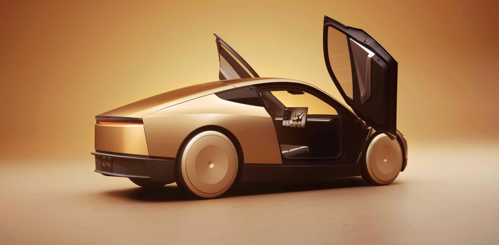

Alex Gold
Hey, I'm Alex Gold.
I'm an engineer who loves to spin CAD, hates CTE mismatches, and doesn't mind frying a resistor.
I currently work at Tesla in Palo Alto, California as a mechanical design engineer on the high voltage distribution team. I studied mechanical engineering at BYU with a focus on high voltage electronics, mechatronics, and battery chemistry. I'm passionate about interdisciplinary engineering and mechatronic systems. Above all else I just want to build, build, build!

Tesla
I am working on developing new vehicle programs, from high level planning and integration with large groups, to detailed part design, to reliability spec generation and validation, to ramping and producing at a massive scale.
I am the design owner of the Cybercab high voltage charge port, which I have taken from early design to production. It's an intricate system with an integrated actuator and several integrated sensors. It has electrical, mechanical, and thermal requirements and it is built with new manufacturing techniques.
I took over this system in the prototype phase, and was responsible for leading a small team to do a complete design overhaul to prepare for hyper scaling. The focus was reliability and manufacturing simplicity. Design decisions were made in conjunction with the upstream supplier and the downstream manufacturing team. The design was completed and pushed into full production with very low failure rates.

FSAE Formula Electric
I was a founding member of the Formula SAE Electric team at BYU. Starting from scratch with no car, no budget, and no playbook, we built a fully electric formula-style racecar and sent it to competition within two years.
Haptic audio controller
I am working on a bluetooth device that sits on my desk and gives physical interfaces to basic audio controls for music and meetings. A fun aspect I am incorporating is a little turntable-style platter that turns as audio plays though it and can be used to scratch back over a song or meeting you are in (inspired by Teenage Engineering OB-4). I'm always listening to music and connecting to meetings through my phone, but I don't want to have it out all the time to handle controls.
My main technical motivation for this project was a to do some buttery smooth haptic interfacing, using the brushless DC motor as an input and output using field controls. I also want to design seamless bluetooth integration, and low latency communication between chips to give a high quality and low lag (<10ms) output. It is also giving me the chance to work on my PCB design and do some industrial design for a sleek housing.
Speaker
Controller
Phone
Architecture:
- Built around an ESP32 -xxxxx chip, xxx processing speeds and double cores were a key requirement (core 0 strictly handles motor control and feedback, core 1 handles audio buffer, bluetooth, screen, user input)
- Motor is a brushless DC gimbal motor controlled with a simpleFOC chip. This is something I debated for a while, and considered using a small brushed motor with physical gearing and clutch, similar to a real turntable, but I decided on a gimbal motor because of the total integration and small packaging of the motor, resolver?, and mechanical structure. Also I found the simpleFOC chip which unlocked precise control at very low speeds and has an active community which I referenced for the firmware. I've spent a long time tuning the control method and filtering for this to make the feel correct with very low cogging. I found this matters a lot when you tie an audio output to it; high frequency wobble you can't physically feel shows up as noticeable audio distortion in the highs and lows.
- I want this to be powered by a usb-c connection that can be plugged into a laptop, so the power draw is limited. This governed the max reaction torque of the platter motor, and required me to add a boost converter to bump up the voltage for my motor. During normal operation the closed-loop motor controls run at shockingly low power (<0.1 watts) so system cooling is not a concern.
- Firmware is based around a two main processing systems. I'm a firmware novice so Claude helped implement the code once I had laid out the high level architecture. In one core, audio is pulled in through a bluetooth connection and fed into a ring buffer which overwrites itself every two minutes. The audio is fed out through a DAC to a lined connection, the position and rate of output is set by a pointer which references the motor position and velocity. In another core, the motor is controlled using a closed loop system using field controls from which reference the resolver. This system took a lot of refining, it has filtering and the motor goes through a calibration cycle during boot to measure cogging due to the permanent magnets, which it then compensates for. Thanks to the simpleFOC community for that one. I really wanted to do bluetooth in and bluetooth out to airpods, but airpods make this so unfriendly, and it added too much complexity and mostly would have made the latency too high to be usable in a meeting or get a responsive feel at the turntable.
This project is in process.
Resume
In the News
KSL NewsRadio shared a photo I took of a cold air funnel spotted over Lehi, Utah.
You found the secret.
.-"""""""-.
/ SWISH!! \
| .-. .-. |
| '-' '-' | nothing but net
| ___ |
\ '---' / _____
'-.......-' | |
| | ___ | o | <- you sank it
_| |_ .' '.|_____|
|______|| GG |
'._____.'
Most visitors never make this shot. You did. As a reward, here's a secret: this whole site is one hand-written HTML file, physics and all. Thanks for playing around.